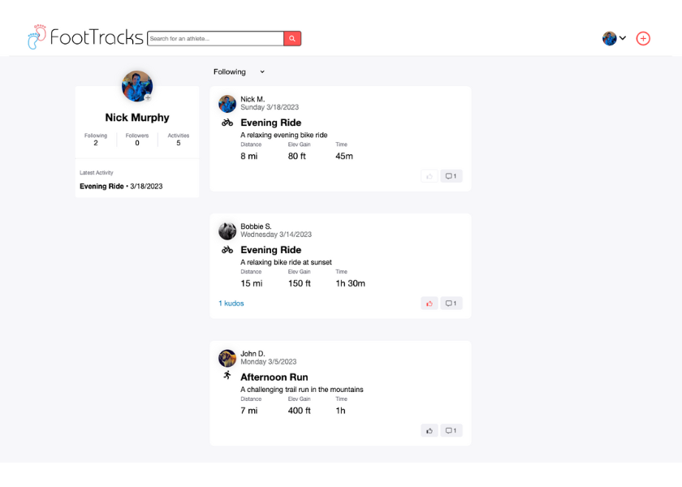

Projects
FootTracks
April 2023 - Present
JavaScript, React, Redux, Python, Flask, SQLAlchemy, PostgreSQL, HTML, CSS
FooTracks is a Strava-inspired web application for users to search for users to follow, view activities from followed users in their feed, record activities using a built in tracker, and leave comments and likes on activities.
- Login/signup functions for users, full CRUD functionality for activities and comments, and CRD functionality for likes and follows.
- Bonus Features include search bar functionality for finding other users, integration of Amazon AWS for uploading profile pictures, and integration of Leaflet/MapBox to record and display activities.
Live Site Github
Plate-Pal
March 2023 - Present
JavaScript, React, Redux, Python, Flask, SQLAlchemy, PostgreSQL, HTML, CSS, AWS S3

Plate-Pal is a Yelp-inspired web application for users to search for businesses, view business pages, and leave reviews and ratings. This was a group project with Google Maps API and react places implementation.
- Login/signup functions for users, full CRUD functionality for businesses and reviews, and CRD functionality for business images.
- Bonus Features include search bar functionality for finding businesses, integration of Google Maps API for displaying business locations after performing a business search, and integration of Google Maps autocomplete API when creating a new business.
Live Site Github